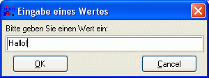
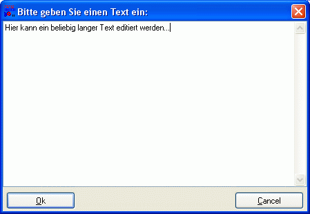

Abfragen von Werten
Um Werte vom Benutzer abzufragen, stellt RapidBATCH gleich drei verschiedene, leistungsstarke Dialoge zur Verfügung.
Häufigste Verwendung findet dabei die bereits kennengelernte INPUTBOX. Dieser Dialog ermöglicht eine Eingabeaufforderung, in die der Benutzer einen Wert, z.B. einen Namen oder eine Zahl eingeben kann. INPUTBOX ist eine Funktion, deren Rückgabewert der eingegebene String ist, und benötigt drei Parameter, nämlich den Dialog-Titel, einen Aufforderungstext sowie einen Vorgabewert, der direkt im Eingabefeld eingeblendet wird und vom Script-Benutzer geändert oder auch ganz ersetzt werden kann.
Ein einfaches Beispiel ist das bereits im Grundlagenkapitel benutzte Script, bei dem der Benutzer einen Wert eingeben kann, der dann in einer ECHO-Messagebox wieder ausgegeben wird:
inputbox [wert] = 'Eingabe eines Wertes', 'Bitte geben Sie einen Wert ein:', 'Hallo!'
echo 'Der eingegebene Wert lautet: ' # [wert]
end

Der INPUTBOX-Dialog zur Abfrage von beliebigen Werten
Klickt der Benutzer auf den OK-Button im Dialog (oder auch einfach nur Return), wird der in das Textfeld eingegebene Text zurückgegeben. Klickt der Benutzer den Cancel-Button oder den Schlieflen-Button des Fensters rechts oben, liefert die Funktion einen Leerstring zurück.
Die Beschriftung der Buttons lässt sich durch Setzen der vordeklarierten Variablen [InputBox_Ok] und [InputBox_Cancel] verändern, so dafl z.B. auch deutsche Bezeichnungen für die Buttons dort angegeben werden können. Defaultmäflig wird die INPUTBOX zentriert auf dem Bildschirm dargestellt; Eine beliebige, individuelle Anzeigeposition des Dialogs lässt sich allerdings mit Hilfe der vordeklarierten Variablen [InputBox_X] und [InputBox_Y] erzielen. Setzt man diese auf den Wert '0' (Standardwert), so bewirkt dies die Zentrierung des Dialogs auf der jeweiligen Achse.
[InputBox_Ok] = 'Alles klar!'
[InputBox_Cancel] = 'Stop!'
inputbox [test] = 'Geänderte Buttons', 'Bitte geben Sie etwas ein:', 'hello world'
echo [test]
end
Neben dem INPUTBOX-Dialog bietet RapidBATCH auch den PWDBOX-Dialog. Eine PWDBOX ist nichts anderes als eine "INPUTBOX für Passwörter", die zur Eingabe des Wertes anstatt eines normalen Textfeldes ein maskiertes Eingabefeld zur Verfügung stellt (in dem jedes eingegebene Zeichen durch ein "*" maskiert wird). Ein PWDBOX-Dialog kann (und sollte!) daher auch nur zur verdeckten Eingabe von Passwörtern eingesetzt werden (daher auch der Name: "PWD" ist die englische Abkürzung für "Password"). Die Parameter von PWDBOX sind dieselben wie bei der INPUTBOX (mit selber Funktion), zudem lassen sich, da PWDBOX das selbe Fenster verwendet wie INPUTBOX, die Beschriftung der Buttons ebenfalls über [InputBox_Ok] und [InputBox_Cancel] ändern (ebenso [InputBox_X] und [InputBox_Y] für die Positionierung des Dialogs auf dem Bildschirm).
pwdbox [passwort] = 'Passwort', 'Bitte geben Sie Ihr Passwort ein:', ''
echo 'Ihr Passwort lautet: ' # [passwort]
end
Bisher haben wir nur einzeilige Eingaben tätigen können; Diese reichen natürlich für sehr viele Anwendungsbereiche bereits aus. Wenn wir aber nun gröflere Eingaben, z.B. eine Adresse oder sogar einen ganzen Text vom Script-User abfragen möchten, genügen Dialoge wie INPUTBOX oder PWDBOX nicht mehr.
Hier müssen wir auf ein weiteres Dialogfenster von RapidBATCH zugreifen: Die EDITBOX! EDITBOX ermöglicht es, einen kompletten Text vom Benutzer editieren zu lassen. Ähnlich wie in einem Text-Editor lässt sich in der EDITBOX das Textfenster scrollen und durch Ziehen mit der Maus vergröflern oder verkleinern. EDITBOX arbeitet im Grunde genauso wie INPUTBOX, da durch Klicken des am unteren Rand befindlichen OK-Buttons der im Textfeld eingegebene/editierte Text, oder durch anklicken des Cancel-Buttons bzw. des Schlieflen-Buttons rechts oben, ein Leerstring an die beim Funktionsaufruf angegebene Rückgabe-Variable zurückgegeben wird.

Der EDITBOX-Dialog zur mehrzeiligen Eingabe bzw. Bearbeitung von Texten und Werten
Als Parameter erwartet die EDITBOX-Funktion einen Fenstertitel, den Text, der im Editierfeld stehen soll, und einen Style-Parameter, ob der Text im Editierfeld editierbar (Wert 'writeable' oder '0') oder nicht-editierbar (Wert 'readonly' oder '-1') ist. Dieser Parameter ermöglicht dann auch die Anzeige von Text ohne dass der Benutzer diesen editieren kann (beispielsweise um eine ReadMe-Datei oder einen Lizenztext bei einem Setup-Script anzuzeigen).
Beispiel:
rem Texte editieren mit EDITBOX
editbox [text] = 'Bitte geben Sie einen Text ein:', '', 'writeable'
msgbox 'Der Text lautet:', [text], '64'
end
Der EDITBOX-Dialog kann mit Hilfe der vordeklarierten Variablen [EditBox_Width] und [EditBox_Height] in der Gröfle angepasst werden, ebenso ist auch die Positionierung des Dialogs auf dem Bildschirm mit den Variablen [EditBox_X] und [EditBox_Y] ohne weiteres möglich, wobei auch hier eine automatische (und bereits vordefinierte) Zentrierung des Dialogs mit dem Wert 0 ermöglicht wird.
Die Beschriftung der Buttons ist über [EditBox_Ok] und [EditBox_Cancel] möglich. Wenn man die Button-Beschriftung auf einen Leerstring setzt, wird der entsprechende Button einfach ausgeblendet, so dass man z.B. eine EDITBOX mit nur einem "Weiter"-Button programmieren kann, wie in folgendem Beispiel (die Funktionen OPENBOX und READFILE werden später noch genauer besprochen!):
rem Datei-Anzeige Script mit der EDITBOX
rem Dateiname abfragen
openbox [file] = 'Bitte Datei wählen:', 'Textdateien|*.txt'
if [file] = '' halt
rem Datei lesen
readfile [text] = [file], '0'
rem EDITBOX individualisieren und anzeigen
[EditBox_Ok] = ''
[EditBox_Cancel] = 'Weiter >'
[EditBox_Width] = '450'
[EditBox_Height] = '480'
editbox [text] = 'Inhalt von: ' # [file], [text], 'readonly'
end
Copyright © 2000-2006 by J.M.K S.F. Software Technologies, Jan Max Meyer
All rights reserved.